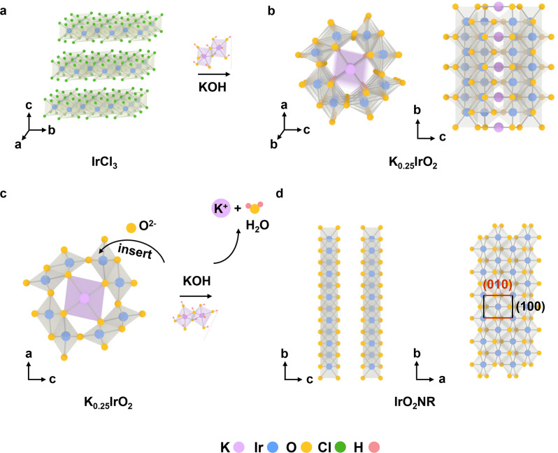

Structural Evolution
ATOMIC STRUCTURE & DYNAMICSHow do atoms in materials rearrange themselves?
A material is not a static structural picture. During synthesis, heating, or use, atoms move, defects emerge, and a crystal may adopt a different arrangement. These changes affect stability, catalytic activity, and heat transport. This direction asks how structures form, why they change, and what those changes do . The work draws on structural chemistry, thermodynamics, and statistical physics. We first use density functional theory (DFT) to calculate electronic structures, energies, and atomic forces, then use molecular dynamics (MD) to follow atomic motion and compare the results with diffraction, microscopy, and other experiments. The iridium-oxide nanoribbon study shown here illustrates how precursors can evolve into a metastable crystalline phase. [1]
Original image of the paper · Structural evolution of nanoribbons
View full-size figure ↗
How to Read the Figure Follow the arrows to see how the atomic arrangement changes and the involvement of potassium ions and water molecules. This is a schematic diagram of the formation process and structural evolution, not a molecular dynamics trajectory.
Image source: Fan Liao, Kui Yin, Yujin Ji, etc., Nature Communications (2023),Fig. 2. Paper [1] ↗
© 2023 The Author(s) · CC BY 4.0 · Original figure reproduced in full, without modification.